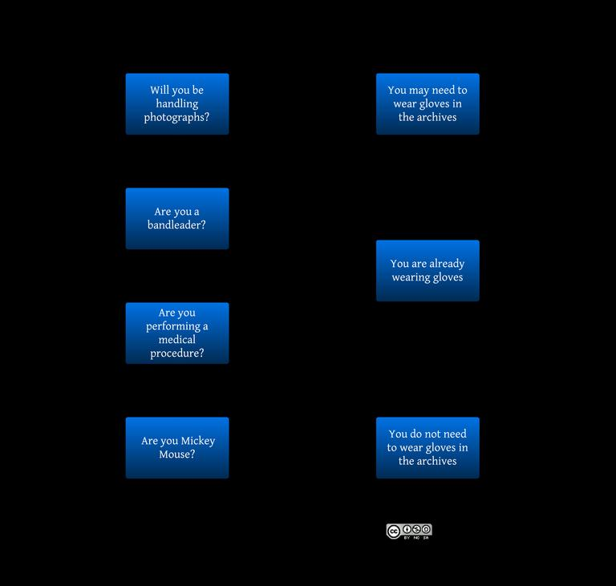

I tell them for paper materials, it’s easier to feel the pages/material, offering better control Clean hands help prevent accidental mishandling, tearing, and dirt/contamination on reusable gloves
Allie Alvis wrote a blog post for the Smithstonian that discusses this further: No Love for White Gloves, or: the Cotton Menace:
- Hands in gloves lack the tactility and manual dexterity of bare hands. Handling a book with gloved hands could lead to accidentally torn pages when the gloves catch on fragile edges, or a dropped book if the gloves prove to be loose or slippery.
- Cotton gloves in particular have a tendency to lift fragments from pages, including pigments. Their fibers can catch in cracks that are invisible to the naked eye, further damaging friable pigments and inks.
- This also means that cotton gloves retain a lot of dirt, making them not so clean after all! In this same vein, gloves cause the hands to sweat, and this moisture can penetrate the gloves to wind up on the books. Ew!
Finally, a helpful flowchart from Derangement and Description

Will you be handling photographs? You might need to wear gloves. Are you a bandleader, performing a medical procedures, or Mickey Mouse? You are already wearing gloves. Otherwise? Go crazy with those naked fingers (but not too crazy, you’re in an archives!)